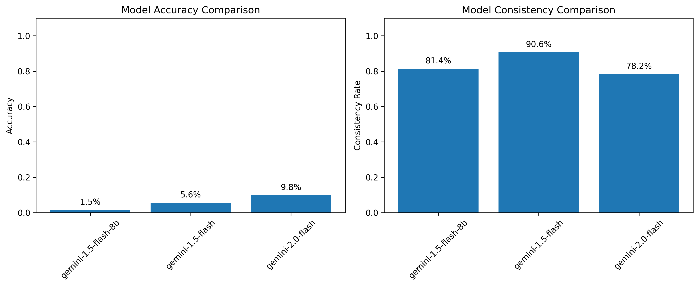
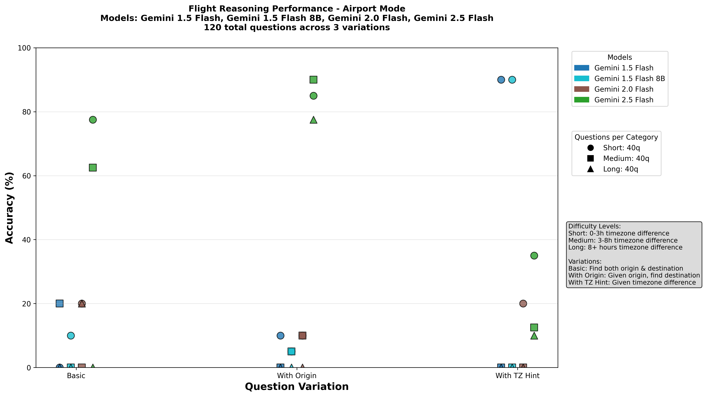

Three self-contained assignments from the NLP course, each grounded in real code and data in the repo.
A part-of-speech tagger trained on train1.wtag / train2.wtag, decoded with the Viterbi algorithm over hand-built feature templates. Predictions are written for comp1.words / comp2.words.
A from-scratch Byte-Pair-Encoding tokenizer extending a BaseTokenizer, trained on domain text, then evaluated on a binary NER task using "first-subtoken" labeling. Three trained tokenizers are shipped as .pkl.
A 270-example benchmark of timezone / flight-duration reasoning questions. Four Gemini models are scored with a mathematical validator (no string matching), revealing a striking weakness on multi-step arithmetic reasoning.
All numbers, examples and figures below are copied directly from the repo: project/data/examples.jsonl, the saved plots under project/output/plots/, and the consistency report.
Files: preprocessing.py, optimization.py, inference.py, main.py, data under HW1_POS/data/.
Training data is whitespace-separated word_TAG tokens, one sentence per line. Inputs to tag (comp1.words) are raw words. The model estimates P(tag | word, context) via a log-linear feature model and decodes the most-likely sequence with Viterbi, with explicit handling of unknown words.
optimization.py) trains feature weights that Viterbi then decodes.Files: base_tokenizer.py, my_tokenizer.py, train_tokenizer.py, train_ner_model.py, test_tokenizer.py; three trained tokenizers in trained_tokenizers/.
BPE starts from single characters and repeatedly merges the most frequent adjacent pair into a new token. Step through the merges on a sample word:
Per the assignment README, tokenizers are compared on:
-100 (ignored in the loss). Example from the README: "Steve Jobs" → ["Steve J", "ob", "s ate"], only "Steve J" gets label 1.Can LLMs do multi-step time arithmetic without tools? A 270-question benchmark says: mostly not.
| Axis | Values | Count |
|---|---|---|
| Mode | Airport (global), Country (international), State (US) | 3 · 90 each |
| Variation | basic · with_origin · with_timezone_hint | 3 |
| Difficulty | short / medium / long timezone gap (≈3h / 8h / 14h) | 3 |
| Per cell | questions per mode×variation×difficulty | 10 |
3 × 3 × 3 × 10 = 270 examples in data/examples.jsonl
{"id": "country_easy_69",
"question": "A flight from CUU departed at 08:45 and arrived at 13:48.
The flight duration was 183 minutes. There exists a valid destination
airport where there is a timezone difference of +2.0 hours from the
origin. Which airport was the destination?",
"context": {"origin":"CUU","timezone_difference":2,
"departure_time":"08:45","arrival_time":"13:48","flight_duration":183},
"expected_answer": "AZO",
"variation": "with_timezone_hint", "question_mode": "country"}
Scoring is mathematical, not string-matching. A model's airport pair is valid iff the implied flight duration matches the stated duration within tolerance, after converting both endpoints to UTC:
Valid ⟺ | duration_calc − duration_expected | ≤ tolerance duration_calc = (t_arr − tz_dest) − (t_dep − tz_orig) # in UTC minutes
Final score = macro-averaged accuracy: each question contributes equally, Acc = (1/n)·Σ xᵢ/r.

project/output/plots/model_comparison_20250825_130330.png. Accuracy stays in single digits (1.5% / 5.6% / 9.8%) even though within-run answer consistency is high (78–91%) — the models answer confidently but get the arithmetic wrong.
project/putils/output/plots/.../model_comparison_multi_mode_20250825_111923.png. Airport mode, 120 questions across 3 variations. Gemini 2.5 Flash (green) leads, and the "With TZ Hint" variation — where the timezone gap is given — produces the highest accuracies.RANDOM_SEED=43 deterministic generation.This runs the project's actual validation math in your browser: convert departure/arrival to UTC using each timezone, and check whether the implied duration matches the stated one within tolerance.
duration_calc = (t_arr − tz_dest) − (t_dep − tz_orig) from project/README.md and evaluation.py. Defaults reproduce the country_easy_69 example (CUU origin, +2h hint).